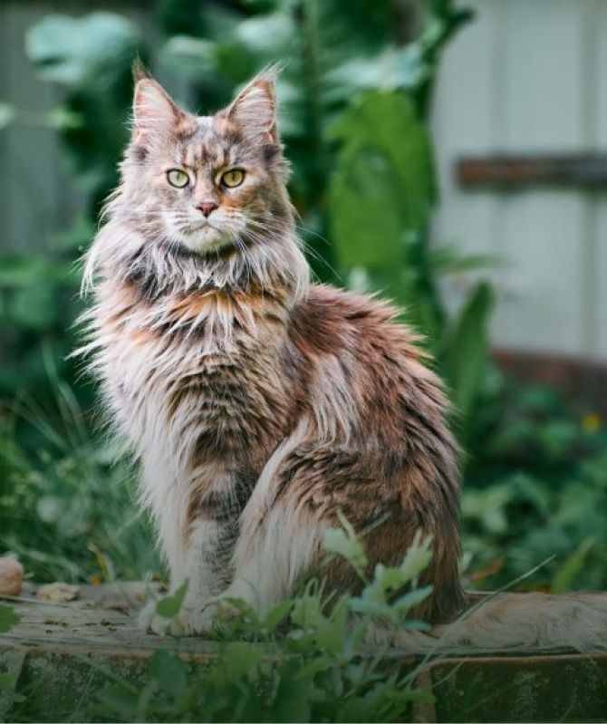

Macskaland
Keresd meg a hozzád legjobban illő négylábúdat és böngéssz az eseményeink között!
Kinti cica
Az időjárás és a hőmérséklet nagyban befolyásolja, hogy egy macska kint tartható-e. Extrém hideg vagy meleg időjárás veszélyeztetheti a macska egészségét.
Amire mindenképpen figyelj:
- Ne tudjon kimenni az utcára
- Legyen egy megfelelő menedéke
- Mindig legyen élelme és vize
Norvég Erdei Macska

Maine Coon
Cicát szeretnék
Benti cicák
Amikor cicát tartasz bent, fontos néhány alapvető szempontot figyelembe venni annak érdekében, hogy a cica boldog és egészséges legyen.
Íme néhány fontos dolog, amire figyelned kell:
- Legyen egy kialakított helye
- Mindig legyen élelme és vize
- Biztosítanod kell számára a napi aktivitást és sportot
Bengáli macska

Meg ez a cica